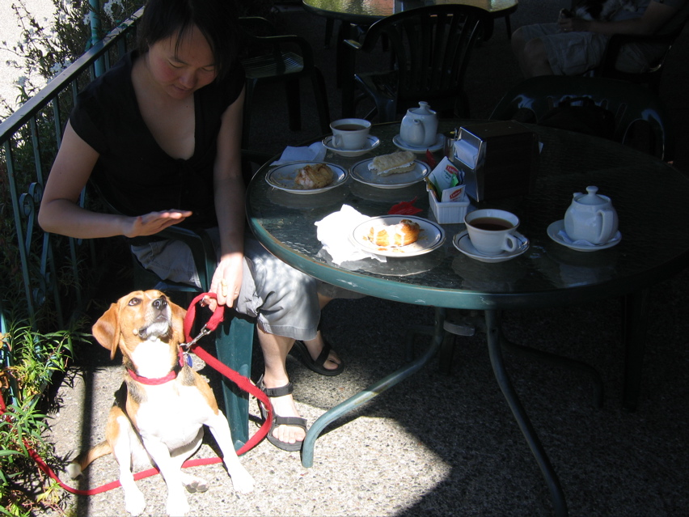

<--Previous Up Next-->

Mortensen's Danish Bakery
No visit to Solvang is complete without sampling one of its many Danish bakeries. Here, Huxley enjoys a spot of sun on Mortensen's back patio. The long white pastry in the upper right is a "Danish waffle". No waffling here -- there's enough sugar in there to send a man to the moon.